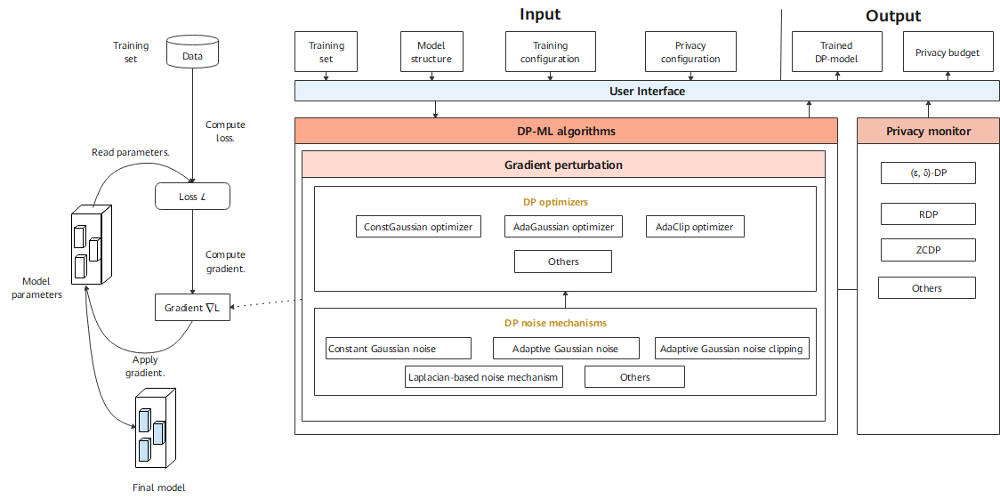

Differential Privacy Design

Overall Design
The Differential-Privacy module of MindSpore Armour implements the differential privacy training capability. Model training consists of building training dataset, computing loss, computing gradient, and updating model parameters. Currently, the differential privacy training of MindSpore Armour focuses on the gradient computing process and uses the corresponding algorithm to clip and add noise to the gradient. In this way, user data privacy is protected.

Figure 1 shows an overall design of differential privacy training, and mainly including differential privacy noise mechanisms (DP mechanisms), a differential privacy optimizer (DP optimizer), and a privacy monitor.
DP Optimizer
DP optimizer inherits capabilities of the MindSpore optimizer and uses the DP mechanisms to scramble and protect gradients. Currently, MindSpore Armour provides three types of DP optimizers: constant Gaussian optimizer, adaptive Gaussian optimizer, and adaptive clipping optimizer. Each type of DP optimizer adds differential privacy protection capabilities to common optimizers such as SGD and Momentum from different perspectives.
Constant Gaussian optimizer is a DP optimizer for non-adaptive Gaussian noise. The advantage is that the differential privacy budget ϵ can be strictly controlled. The disadvantage is that in the model training process, the noise amount added in each step is fixed. If the number of training steps is too large, the noise in the later phase of training makes the model convergence difficult, or even causes the performance to deteriorate greatly and the model availability to be poor.
Adaptive Gaussian optimizer adaptively adjusts the standard deviation to adjust the Gaussian distribution noise. In the initial phase of model training, a large amount of noise is added. As the model gradually converges, the noise amount gradually decreases, and the impact of the noise on the model availability is reduced. A disadvantage of the adaptive Gaussian noise is that a differential privacy budget cannot be strictly controlled.
Adaptive clipping optimizer is a DP optimizer that adaptively adjusts a clipping granularity. Gradient clipping is an important operation in differential privacy training. The adaptive clipping optimizer can control a ratio of gradient clipping to fluctuate within a given range and control the gradient clipping granularity during training steps.
DP Mechanisms
The noise mechanism is a basis for building a differential privacy training capability. Different noise mechanisms meet requirements of different DP optimizers, including multiple mechanisms such as constant Gaussian distribution noise, adaptive Gaussian distribution noise, adaptive clipping Gaussian distribution noise, and Laplace distribution noise.
Monitor
Monitor provides callback functions such as Rényi differential privacy (RDP) and zero-concentrated differential privacy (ZCDP) to monitor the differential privacy budget of the model.
ZCDP[1]
ZCDP is a loose differential privacy definition. It uses the Rényi divergence to measure the distribution difference of random functions on adjacent datasets.
RDP[2]
RDP is a more general differential privacy definition based on the Rényi divergence. It uses the Rényi divergence to measure the distribution difference between two adjacent datasets.
Compared with traditional differential privacy, ZCDP and RDP provide stricter privacy budget upper bound guarantee.
Code Implementation
mechanisms.py: implements the noise generation mechanism required by differential privacy training, including simple Gaussian noise, adaptive Gaussian noise, and adaptive clipping Gaussian noise.
optimizer.py: implements the fundamental logic of using the noise generation mechanism to add noise during backward propagation.
monitor.py: implements the callback function for computing the differential privacy budget. During model training, the current differential privacy budget is returned.
model.py: implements the logic of computing the loss and gradient as well as the gradient truncation logic of differential privacy training, which is the entry for users to use the differential privacy training capability.
References
[1] Lee, Jaewoo, and Daniel Kifer. “Concentrated differentially private gradient descent with adaptive per-iteration privacy budget.” Proceedings of the 24th ACM SIGKDD International Conference on Knowledge Discovery & Data Mining. 2018.
[2] Mironov, Ilya. “Rényi differential privacy.” 2017 IEEE 30th Computer Security Foundations Symposium (CSF). IEEE, 2017.